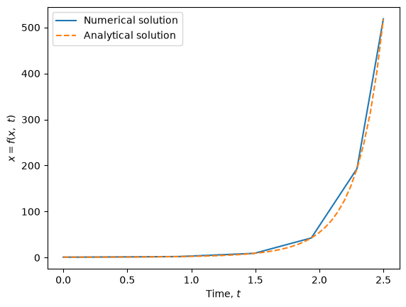

- Generated by
 1.18.0
1.18.0
|
NDXL
|
This page documents the C versions of the example simulations used in the NDXL publication, together illustrating the capabilities of NDXL. For a brief introductory example using the Kuramoto model, see the NDXL source repository. We recommend reading through the Installation guide before writing any code, as this section assumes a similar file structure, and that call source code is placed in main.c. We also strongly recommend first reading through the Concepts page, as we will assume you are familiar with the network dynamics-specific terminology.
All NDXL programs MUST call ndxlInit() before any NDXL functionality. This function initialises crucial internal variables, and registers garbage collection functions that automatically and safely release any remaining NDXL objects when the program terminates.
The core object in NDXL is a NDXLNetwork NDXLNetwork, which is a (initially empty) host object for creating vertices, edges, and noise channels, and which later becomes the target of simulation functions. We will start by defining an empty network using ndxlCreateNetwork(), which takes in a single parameter, a void* containing any extra data we want the network to use. We will pass 0 for now, since we do not yet have any data the network should rely on.
We now need to populate nwk with some vertices, so that we have components to simulate. Each vertex needs a dynamics function that describes how its state vector evolves over time \(t\), expressed as a time ordinary differential equations (ODE). For example, if we want a vertex wtih state vector \(\vec{x}\) to evolve according to
\[\frac{d\vec{x}}{dt} = A\vec{x}t \]
where \(A\) is some constant, and \(\vec{x}\) has one element (is a scalar), then in NDXL we write:
In our function, we exctract \(A\) from the user-defined void* params that we will pass to the vertex constructor, and we write the differential equation in-place to the output vector dx. In main(), we can now create the vertex, baring in mind that whatever void* params points to must persist in memory for the lifetime of the vertex, as NDXL does not copy these data.
We could now simulate nwk, but we have no way of retrieving the simulated outputs, as NDXL does not automatically store these. To capture simulation output, we use a discrete callback that operates on the network object. Here, we will write the state vector of vert out to a CSV file at each evaluated time step.
Because the network only has one vertex, ndxlGetNetworkFirstVertex() will give us the corresponding NDXLVertex pointer. Since this pointer is shared, we do not need to (and SHOULD NOT) release the associated reosources after we are done using it. Here, the void* params refers to the parameters pointer associated with the network, which, if you'll recall from earlier, we set to 0! We therefore need to modify our network creation to have the output file as its void* params.
We are now ready to simulate our network using one of the simulation functions. We will use ndxlNetworkSimulateDopri, which uses the Dormand-Prince Runge-Kutta pair of order 5(4) to integrate the network agents. Integration starts at the network's current local simulation time, which is set to 0 by default when we created the network, and we simply specify the duration of the simulation. We can also verify the success of the simulation by checking against NDXL_ERR.
If the network successfully simulates, states.csv will contain two columns, namely, the evaluated times, and the state of vert at those times. We can compare the outputs to the analytical solution of our dynamics function, which is
\[x(t) = \exp{\left(\frac{A}{2}t^2\right)} \]
given that \(x(t=0)=1\). We plot the analytical and numerical solutions using a plotting library like matplotlib.

Congratulations! You have successfully set up and simulated your first network in NDXL. The remainder of the examples cover: